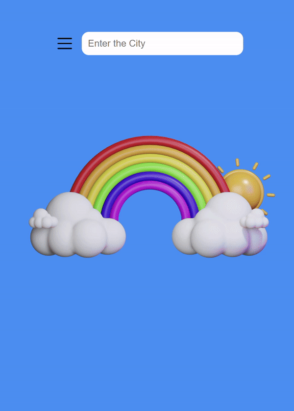

Overview
A dynamic weather application that allows users to search for any city and receive real-time weather information along with appropriate dress code suggestions based on the current temperature.
Key Features
OpenWeatherMap API Integration
- Real-time weather data fetching based on user input
- Dynamic API URL construction with city name and API key
- Comprehensive weather details including temperature, feels-like temperature, wind speed, and humidity
Temperature Analysis
- Automatic conversion from Kelvin to Celsius
- Dynamic temperature messages and corresponding images
- Temperature swing notifications for significant daily variations
Location-Aware Features
- Local time and date calculation using timezone data
- User-friendly time format display
- Error handling for invalid city names
User Interaction
- Interactive opinion system with real-time counter updates
- Dynamic "AccurateCircle" component displaying most selected opinions
- Hourly reset mechanism for opinion counts